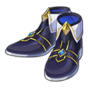
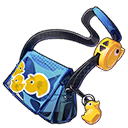
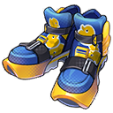
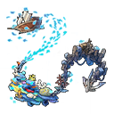

추천 광추
대지로 돌아온 비행
단일 지원 → 에너지 +6pt · 피해 증가
효과 자세히
대상 피해 +15% 3턴, 최대 3스택. 지원 2회마다 SP +1. 단일 대상에 적용하는 스킬·필살기로 중첩.
댄스! 댄스! 댄스!
필살기 → 전원 행동 게이지 +24%
효과 자세히
딜러가 다시 행동해야 하는 타이밍에 사용.
맞물린 톱니
공격 또는 피격 → 에너지 +8pt
효과 자세히
턴마다 1회.
아직 전투는 끝나지 않았다
회복효율 +10% · SP 반환
효과 자세히
아군 대상 필살기 2회마다 SP +1. 스킬 후 다음 아군 피해 +30% 1턴.
행성과의 만남
같은 속성 피해 +24%
효과 자세히
장착자와 같은 속성 피해를 주는 아군에게 적용.
추천 유물
고행의 길에 다시 오른 사제 4 · 생명의 바커 공 2
- 머리
 주옵션HP부옵션속도 · 공격력% · HP% · 방어력% · 효과 저항
주옵션HP부옵션속도 · 공격력% · HP% · 방어력% · 효과 저항 - 손
 주옵션공격력부옵션속도 · 공격력% · HP% · 방어력% · 효과 저항
주옵션공격력부옵션속도 · 공격력% · HP% · 방어력% · 효과 저항 - 몸통
 주옵션공격력%부옵션속도 · HP% · 방어력% · 효과 저항
주옵션공격력%부옵션속도 · HP% · 방어력% · 효과 저항 - 다리

주옵션속도부옵션공격력% · HP% · 방어력% · 효과 저항 - 구체
 주옵션공격력% / HP%부옵션속도 · 공격력% (주옵션 제외) · HP% (주옵션 제외) · 방어력% · 효과 저항
주옵션공격력% / HP%부옵션속도 · 공격력% (주옵션 제외) · HP% (주옵션 제외) · 방어력% · 효과 저항 - 매듭
 주옵션에너지 회복효율부옵션속도 · 공격력% · HP% · 방어력% · 효과 저항
주옵션에너지 회복효율부옵션속도 · 공격력% · HP% · 방어력% · 효과 저항
이 조합을 추천하는 이유
사제 단일 버프 시 대상 치피 +18%, 최대 2중첩. 바커 공 속도 120 → 첫 행동 당김.
가상공간을 누비는 메신저 4 · 바다에 잠긴 루샤카 2
- 머리
 주옵션HP부옵션속도 · 공격력% · HP% · 방어력% · 효과 저항
주옵션HP부옵션속도 · 공격력% · HP% · 방어력% · 효과 저항 - 손
 주옵션공격력부옵션속도 · 공격력% · HP% · 방어력% · 효과 저항
주옵션공격력부옵션속도 · 공격력% · HP% · 방어력% · 효과 저항 - 몸통

주옵션공격력%부옵션속도 · HP% · 방어력% · 효과 저항 - 다리

주옵션속도부옵션공격력% · HP% · 방어력% · 효과 저항 - 구체
 주옵션공격력% / HP%부옵션속도 · 공격력% (주옵션 제외) · HP% (주옵션 제외) · 방어력% · 효과 저항
주옵션공격력% / HP%부옵션속도 · 공격력% (주옵션 제외) · HP% (주옵션 제외) · 방어력% · 효과 저항 - 매듭

주옵션에너지 회복효율부옵션속도 · 공격력% · HP% · 방어력% · 효과 저항
이 조합을 추천하는 이유
메신저 필살기 후 파티 속도 +12%. 루샤카 장착자는 2~4번, 딜러를 1번.
이 정도면 잘 키웠다
동일 파티·광추 기준 · 조건 [*]
| 스탯 | 추천 스탯 | 준종결 | 종결 |
|---|---|---|---|
| 공격력 [*] 스킬 Lv.10은 딜러 기초 공격력의 50%와 정운 현재 공격력의 25% 중 작은 값. 딜러 기초 공격력의 2배까지 투자. | 2,400+ | 2,600+ | 축복 상한 충족 |
| 속도 [*] 딜러보다 먼저 축복을 부여. 바커 공 첫 전투 행동 전진 고려. | 134 | 143 | 160+ |
| 에너지 회복효율 [*] 5성 회복효율 매듭 119.4%. 바커 공·루샤카 5% 추가로 124.4%. | 119.4% | 119.4% | 124.4% 선택 |
육성 단계의 기준
캐릭터·광추 Lv.80 · 5성 유물 +15. 발동 조건은 명시한 수치, 그 외는 육성 목표.
성혼과 추천 돌파
2돌 축복 딜러 처치 시 에너지 · 6돌 필살기 대상 에너지 +10pt.
1축복 아군 필살기 → 대상 속도 +20%
축복 대상의 필살기 사용 후 1턴.
2축복 아군 처치 → 해당 아군 에너지 +5pt추천
턴당 1회.
3필살기 +2 · 일반 공격 +1
필살기·일반 공격 레벨 상한 각각 15·10.
4축복의 추가 피해 배율 +20%p
명화는 변화하며 형세를 읽나니
5전투 스킬·특성 +2
스킬·특성 레벨 상한 각각 15.
6필살기 대상 회복 에너지 +10pt추천
기본 50pt → 60pt.
추천 파티


기본 운영과 행적
축복을 유지하면서 필살기 에너지 지원
딜러에 전투 스킬 → 축복 남은 턴을 보며 일반 공격 → 딜러가 필살기를 먼저 쓰고 정운으로 에너지 회복.
- 행동 전진으로 딜러 턴이 빨라지면 축복 갱신 시점도 빨라짐.
행적 육성 순서
전투 스킬 → 필살기 → 특성 → 일반 공격
아하 속도 계산기 →기준과 출처 · 2026-11-25
4.7 데이터 · Prydwen 장비 참고 · 자료실 편성 예시